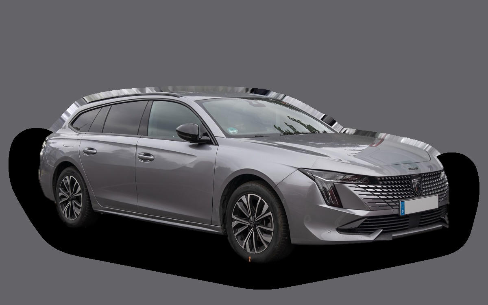
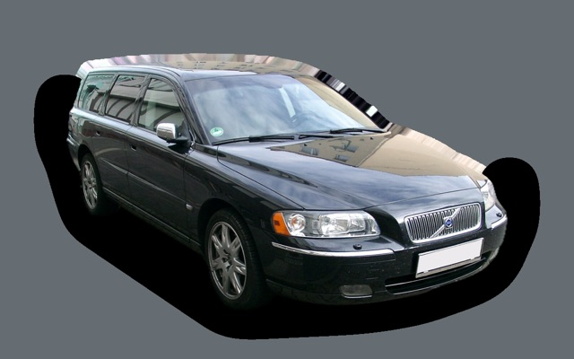
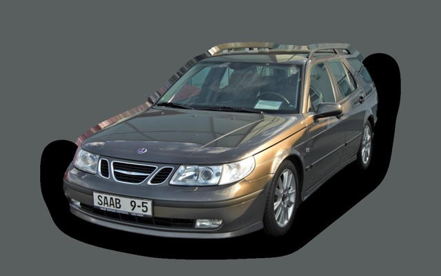
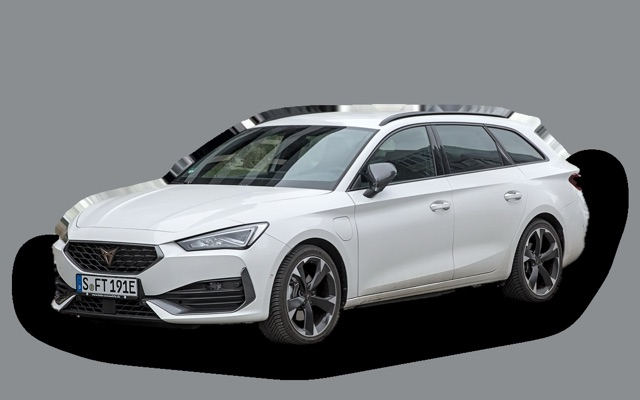

Vad kostar en Peugeot 508 SW per månad?
En Peugeot 508 SW från 2021 kostar cirka 3 827 kr i månaden, allt inräknat.
3 827 krper månad, årsmodell 2021
173 000 krpris, årsmodell 2021
439 900 krsenaste nypris
Cprisvärdhetsbetyg (2021)

_–_f_05072025.jpg){kind=link}
Månadskostnad per årsmodell
| Årsmodell | Version i beräkningen | Pris | Per månad | Betyg |
|---|---|---|---|---|
| 2024 | PureTech 130 automat, GT | 276 000 kr | 4 773 kr | D |
| 2021 | PureTech 130 automat, GT | 173 000 kr | 3 827 kr | C |
Räknat på 5 års ägande och 1 250 mil per år, med bränslepriser från 2026-10-22. Månadskostnaden innehåller värdeminskning, drivmedel, service och reparationer, försäkring och fordonsskatt.
Så fördelas kostnaden för en 2021:a
- Värdeminskning: 1 300 kr/mån
- Drivmedel: 1 293 kr/mån
- Service och reparationer: 792 kr/mån
- Försäkring: 361 kr/mån
- Fordonsskatt: 82 kr/mån
Motorer och versioner
| Motor | Drivmedel | Effekt | 0–100 km/h | Förbrukning (WLTP) | Räckvidd | Årsmodeller | Pristillägg |
|---|---|---|---|---|---|---|---|
| PureTech 130 automat | Bensin | 130 hk | 10 s | 6 l/100 km | – | 2019–2024 | – |
| BlueHDi 130 automat | Diesel | 130 hk | 10,5 s | 4,8 l/100 km | – | 2019–2024 | +15 000 kr |
| Laddhybrid 225 | Laddhybrid | 225 hk | 8,3 s | 1,4 l/100 km + 17 kWh/100 km | – | 2019–2024 | +140 000 kr |
- Utrustning: GT
Fakta
- Kaross
- Kombi
- Årsmodeller
- 2019–2024
- Senaste nypris
- 439 900 kr
- Bagage
- 530 liter
- Euro NCAP
- 5 av 5 stjärnor
- Nybilsgaranti
- 3 år
- Driftsäkerhet
- 3 av 5
- Helförsäkring, uppskattning
- 7 200 kr/år
- Service, uppskattning
- 4 400 kr/år
Vanliga fel att ha koll på
- Kamrem i oljebad löses upp (1,2 PureTech), reparation cirka 11 000 kr
- Motorhaveri efter kamremsfel, reparation cirka 50 000 kr
- Oljeförbrukning och sot (1,2 PureTech), reparation cirka 3 000 kr
Felen gäller vissa motorer och årsmodeller. I kalkylatorn räknas risken för just den version du väljer.
Fördelar och nackdelar
Fördel
Snygg och låg kombi med kraftfull laddhybrid.
Nackdel
Tillverkas inte längre för Sverige, och lågt i taket bak.
Liknande bilar

Volvo V70 II3 823 kr/mån som 2007:a
Saab 9-5 SportCombi3 845 kr/mån som 2007:a Volkswagen Passat B83 871 kr/mån som 2020:a
Volkswagen Passat B83 871 kr/mån som 2020:a
Cupra Leon Sportstourer3 765 kr/mån som 2023:a Audi A4 Avant3 919 kr/mån som 2021:a
Audi A4 Avant3 919 kr/mån som 2021:a Peugeot 308 SW3 647 kr/mån som 2023:a
Peugeot 308 SW3 647 kr/mån som 2023:a
Uppdaterad 2026-10-27 · annonsdata okt 2026